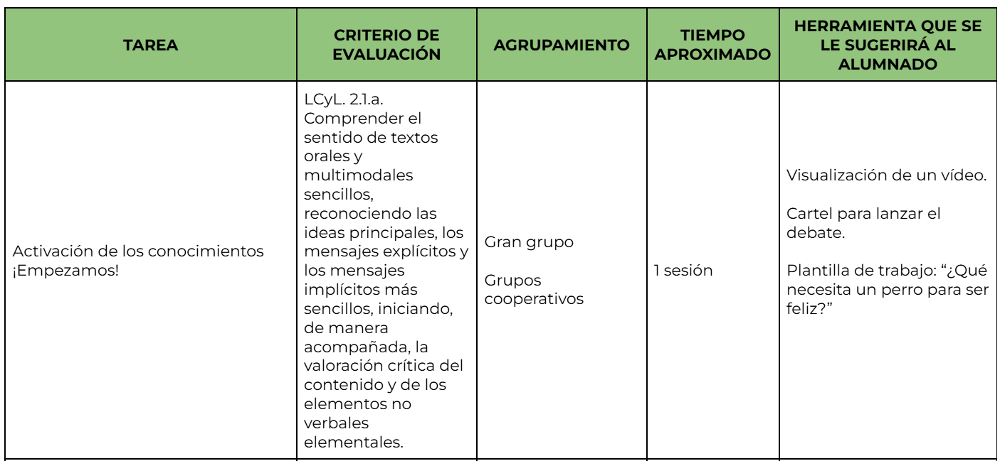
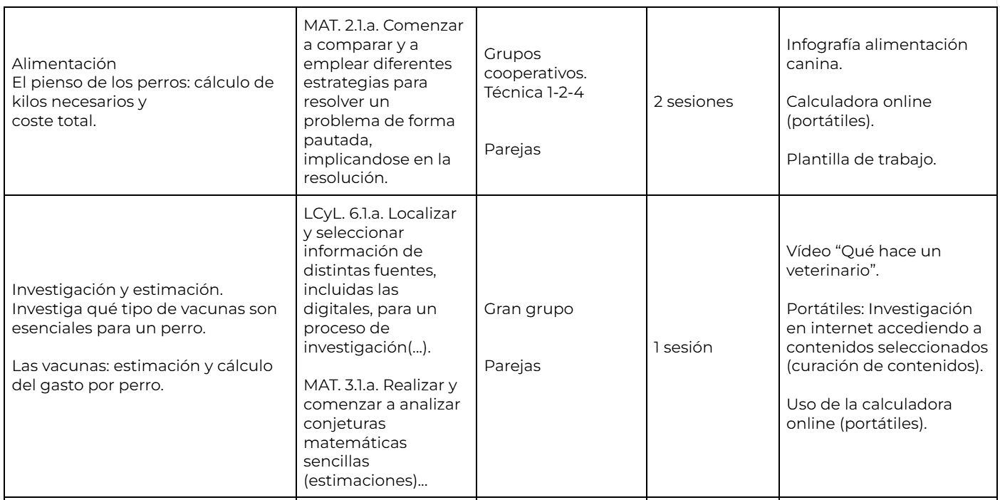
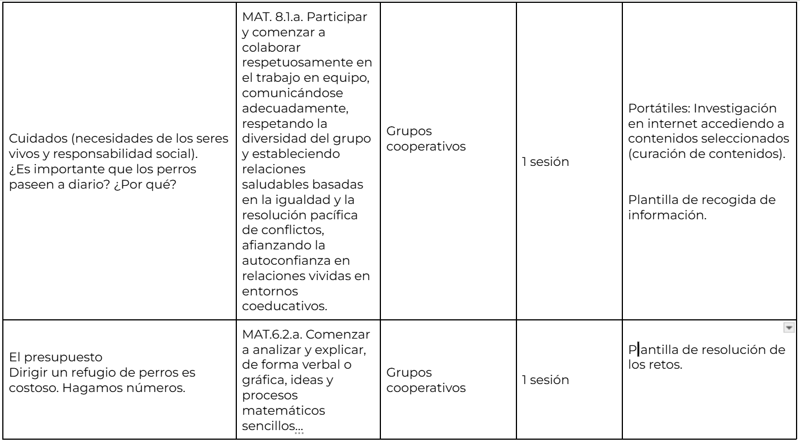
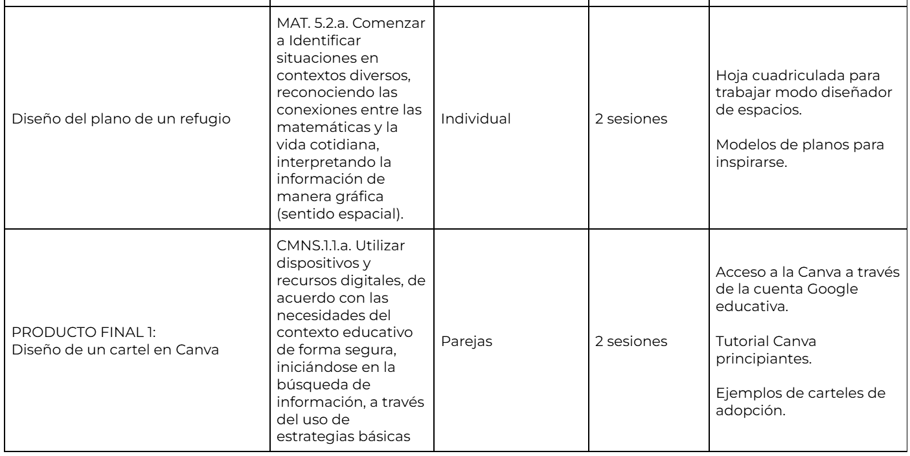
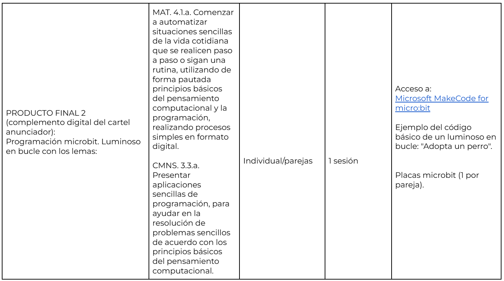
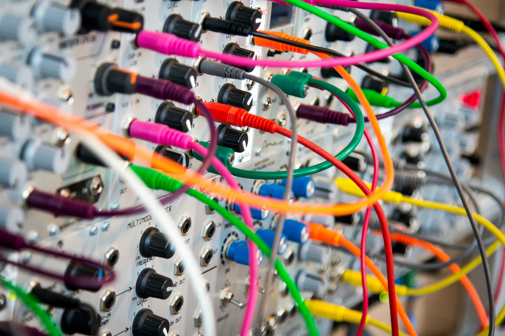

RELACIONAMOS TAREAS CON CRITERIOS DE EVALUACIÓN
Esta tabla contiene la relación de tareas, criterios de evaluación, agrupamientos y recursos que necesitará el alumnado para el desarrollo de cada fase. Se trata de una herramienta muy útil para la organización y desarrollo del proyecto.





PLAN B: previsión de problemas técnicos
¿Cómo podrían resolverse los problemas técnicos que pudieran surgir con el uso de tecnología en el aula?

Foto de John Barkiple en Unsplash
Sigue el siguiente protocolo:
- Antes de cada sesión, es importante comprobar el funcionamiento de los equipos de aula y el funcionamiento de los portátiles (que tengan carga).
- Siempre es importante contar con un plan B: disponer de versiones impresas de las plantillas, vídeos descargados o materiales en papel para continuar la actividad sin interrupciones.
- Es importante fomentar la colaboración: si algún compañero tiene dificultades técnicas (ej.: un ordenador que no enciende, está sin batería, etc.) pueden seguir trabajando en parejas.
- Además, el proyecto debería tener la flexibilidad suficiente como para poder modificar el orden de ciertas tareas, si llega el caso.
- Por último, es siempre importante contar con material de apoyo: pizarrillas "velleda" para los cálculos y la caja de calculadoras físicas.